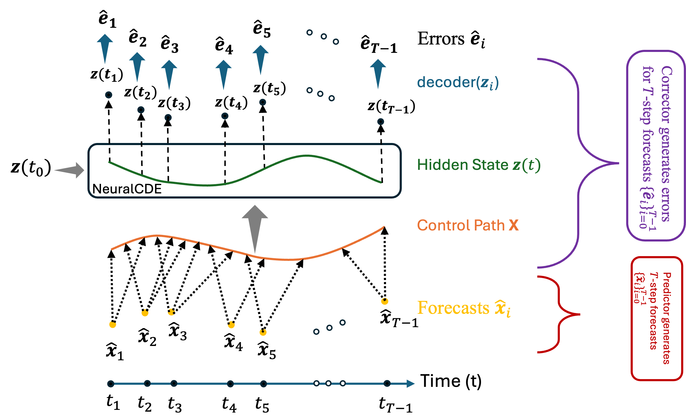
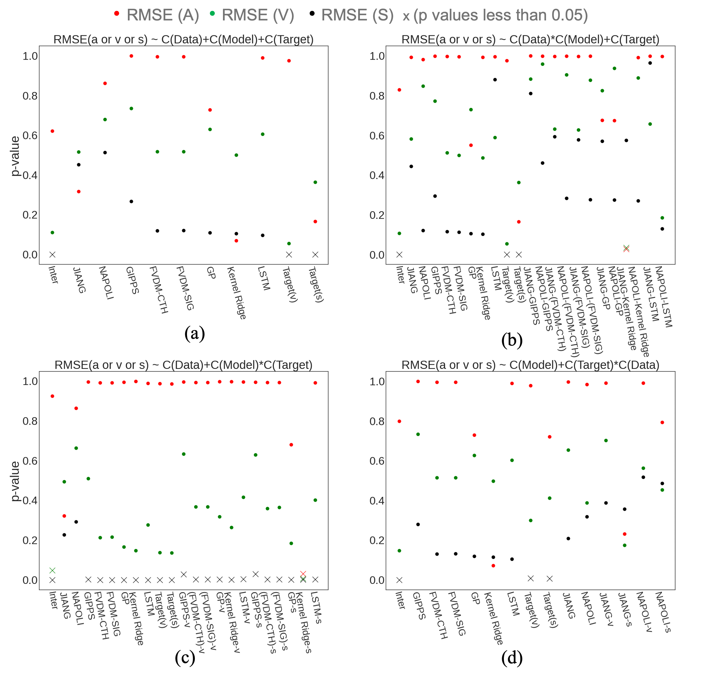

|
Muhammad Bilal Shahid I am working towards my PhD at Coordinated Systems Lab in Ames, IA, where I am working under the kind supervision of Dr. Cody Fleming. During my PhD, I've worked on a number of interesting projects mainly related to dynamical systems modeling and uncertainty quantification. Email / CV / Google Scholar / Twitter / Github |
{kind=link}
|

|
Neural CDEs as Correctors for Learned Time-Series Models
Muhammad Bilal Shahid, Prajwal Koirla, Cody Fleming Under Review, 2025 arXiv / Code We propose modeling the error dynamics of learned time-series predictors with a Neural CDE to improve long-horizon forecasting. |

|
HopCast: Calibration of Autoregressive Dynamics Models
Muhammad Bilal Shahid, Cody Fleming Under Review, 2025 arXiv / Code A predictor–corrector mechanism that yields calibrated prediction intervals for autoregressive dynamics models. |
|

|
Towards Robust Car-Following Dynamics Modeling via Black-Box Models: Methodology, Analysis, and Recommendations
Muhammad Bilal Shahid, Cody Fleming Transportation Research Record, 2024 arXiv / Code We conducted a comprehensive study on optimal target-variable selection for training black-box models of car-following dynamics. The resulting models exhibited improved extrapolation and lower error accumulation over time. |